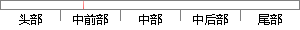

(3)影响生存时间因素分析，通过建立模型判断保护因素和不利因素，以及因素作用大小，常用Cox比例风险回归模型（Cox Proportional Hazards Model）。
片段位置图

相似结果|
1
原句片段：(3)影响生存时间因素分析，通过建立模型判断保护因素和不利因素，以及因素作用大小，常用Cox
相似片段 1：3.分析危险因素 是通过生存分析模型来探讨影响生存时间和终点事件的保护因素和不利因素,因素作用的大小及方向,相对危险度的大小,基本使用Cox回归模型。 4.建立数学...
相似片段 2：(3)影响因素分析:研究某个或某些因素对生存率或生存时间的影 响作用。如为...(4)预测:建立cox回归预测模型。 生存分析(Survival Analysis)菜单 寿命表(Life ...
相似片段 3：生存过程描述生存过程比较影响因素分析 89-3 主要...通过一个模型来分析生存时间的分布规律,以及危险因素...β反映因素作用的实际水 平,但不能直接相互比较;β...
相似片段 4：影响因素分析:目的是为了探索和了解影响生存时间长短的...影响因素分析:Cox比例风险回归模型(Cox回归模型),是...因素作用大小及方向:保护因素还是危险因素、相对危险...
2
原句片段：比例风险回归模型（Cox Proportional Hazards Model）。
相似片段 1：COX回归模型,又称“比例风险回归模型(proportional hazards model,简称Cox模型)”,是由英国统计学家D.R.Cox(1972)年提出的一种半参数回归模型。该模型以生存结局...
相似片段 2：Cox比例风险回归模型(Cox’s proportional hazards regression model),简称Cox回归模型。该模型由英国统计学家D.R.Cox于1972年提出,主要用于肿瘤和其它慢性病的预后...
相似片段 3：Cox比例风险回归模型(Cox’s proportional hazards regression model),简称Cox回归...举报内容: SPSS教程之生存分析的Cox回归模型(比例风险模型) 举报原因: 色情 政治...
相似片段 4：第十九章 比例风险模型——Cox回归 Proportional Hazard (http://statdtedm.6to23.com——Cox Proportional Hazard Model Cox’sRegression 华中科技大学同济医学...
相似片段 5：第十九章比例风险模型——Cox回归 Proportional Hazard Model ——Cox’s Regression 华中科技大学同济医学院流统系宇传华 http://statdtedm. 是一种允许资料有“...
相似片段 6：COX ‘s Proportional Hazard Model Cox比例风险模型 Cox比例风险模型童新元 中国人民解放军总医院 2005年11月7日 Cox比例风险回归模型 Cox比例风险回归模型在医学中...
相似片段 7：第十九章 比例风险模型——Cox回归 Proportional Hazard Model ——Cox's Regression华中科技大学同济医学院流统系 宇传华是一种允许资料有"删失(或截尾)"数据存在的...
相似片段 8：第十九章 比例风险模型——Cox回归Proportional Hazard Model ——Cox&..(http://statdtedm.6to23.com——Cox Proportional Hazard Model Cox’sRegression 华中...
相似片段 9：比例风险模型——Cox回归ProportionalHazardModel——.ppt,比例风险举例病人2的死亡风险是病人1的5倍比例风险(假定违背)举例治疗组与安慰剂病人的死亡风险不呈比例第...
|
※ 片段修改建议 ※
近似词参考：- 生存：保存 糊口生涯 生活 生计
- 时间：时候
- 因素：身分
- 分析：阐发 阐明 剖析
- 通过：经由过程
- 建立：成立 创立 创设 建树 确立 设立建设 竖立 创建 树立
- 模型：模子
- 判断：判定 果断
- 保护：庇护 护卫 回护 珍爱 掩护 维护
- 因素：身分
- 以及：和
- 因素：身分
- 作用：感化
- 大小：巨细
- 常用：经常使用
- 风险：危害
- 模型：模子
系统自动生成语句：(3)影响保存时候身分阐发，经由过程成立模子判定庇护身分和不利身分，和身分感化巨细，经常使用Cox比例危害回归模子（Cox Proportional Hazards Model）。
注：本片段修改建议为系统自动生成，仅供参考。